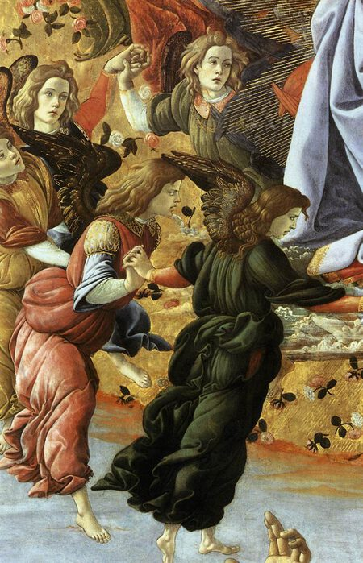

Sandro Botticelli,1445 - 1510,Early Renaissance,Italian,"Alessandro (c. 1445 – May 17, 1510), known as Sandro Botticelli (Italian: [ˈsandro bottiˈtʃɛlli]), was an Italian painter of the Early Renaissance. He belonged to the Florentine School under the patronage of Lorenzo de' Medici, a movement that Giorgio Vasari would characterize less than a hundred years later in his Vita of Botticelli as a ""golden age"". Botticelli's posthumous reputation suffered until the late 19th century; since then, his work has been seen to represent the linear grace of Early Renaissance painting.",http://en.wikipedia.org/wiki/Sandro_Botticelli,164
